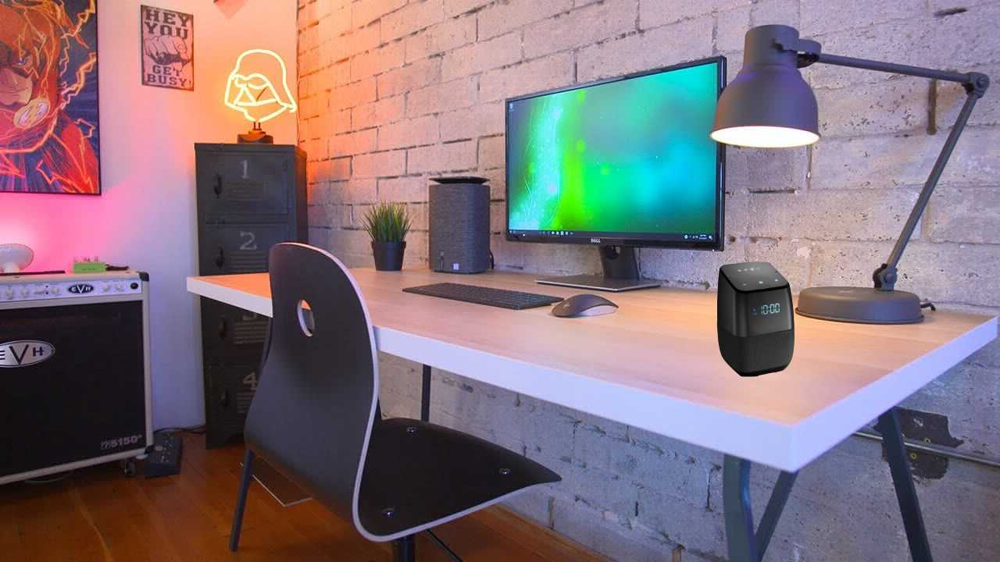
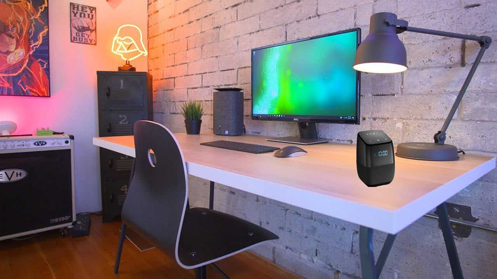

Wave assistant is a smart speaker with Windows pre installed.It can be used as a smart speaker as well as a computer simultaneously using an usb type-c cable
 

Wave assistant is the world's first Smart speaker/computer which will be used in the future.
For the first time in the history of smart speakers, we bring you the first smart speaker to combine Amazon's Alexa as well as Google Assistant's features under one hood of metal and mesh .It collects data from Google ,Duck Duck Go ,Yahoo and other various sites and provides data to the user.
It packs a i9 7900x processor,8GB of ram, making it more than enough fast with a 10 gigabit wifi module to attain fast searching speeds to give user the answers quickly.
hence it can also be used as a computer , it has immense amount of portability and it can connect to any screen or a USB-C port.
The shell of the speaker is made from carbon fibers making it easier to transport yet strong .We have put 4 tweakers and a woofer from Sony facing in all 4 directions and down respectively to give the user a great sound. Also there are 4 microphones at each pillar so that the assistant can hear to user's voice and respond.
Its connected to your phone all the time so that you can place calls over the speaker.It can also be connected to user's Spotify ,Google Music, Apple Music ,Deezer ,etc. accounts to play music wirelessly. User doesn't need to worry about home appliances that can be connected to the wifi as the user can control these by his or her voice command.
1. Philips Hue
2. August door locks
3. Wemo ports
4. Nest
All other appliances will be available to control in the future
96.4 mm (3.80 in) diameter
142.8 mm (5.62 in) high
All the product are made in India and will be shipped throughout India by secure services like DHL,Blue Dart,Fed EX, etc. Also it is opnly available through our site as we don’t consider other sites like Flipkart and Amazon trustworthy.